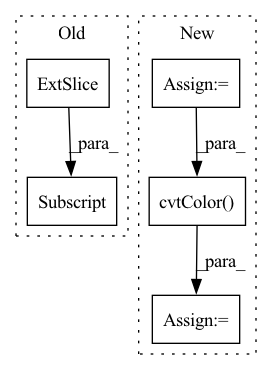

Pattern ID :1554

Before Change
rgb = cm.hsv(angles_normalized)[:, :-1] // hsv is cyclic
magnitude = np.sqrt(np.sum(flows**2, axis=1))
magnitude /= magnitude.max()
return rgb * magnitude[:, np.newaxis]
def update_scan(self):
// first open data
After Change
// https://stackoverflow.com/questions/28898346/visualize-optical-flow-with-color-model
// Use Hue, Saturation, Value colour model
hsv = np.zeros((flows.shape[0], 1, 3), dtype=np.uint8)
hsv[..., 1] = 255
mag, ang = cv2.cartToPolar(flows[..., 0], flows[..., 1])
hsv[..., 0] = ang * 180 / np.pi / 2
hsv[..., 2] = cv2.normalize(mag, None, 0, 255, cv2.NORM_MINMAX)
rgb = cv2.cvtColor(hsv, cv2.COLOR_HSV2RGB)
rgb = rgb[:, 0, :] / 255. // Normalize to 1
rgb[rgb < 0.2] = 0.2 // Just for visualize not moving points
return rgb
In pattern: SUPERPATTERN
Frequency: 4
Non-data size: 5
Instances
Fragment ID: 6950346
Project Name: jabb0/fastflow3d
Commit Name: ef8013b20d8d6b8f7090a5d6ba114bc64617682c
Time: 2021-07-07
Author: carlosmn1997@gmail.com
File Name: visualization/laserscanvis.py
M Class Name: LaserScanVis
N Class Name: LaserScanVis
M Method Name: flow_to_rgb(2)
N Method Name: flow_to_rgb(2)
M Parent Class:
N Parent Class:
M File Name: visualization/laserscanvis.py
N File Name: visualization/laserscanvis.py
M Start Line: 86
M End Line: 92
N Start Line: 82
N End Line: 93
'>
Before Change
uv = zoom(uv,(1,1,float(H)/H1,float(W)/W1))
yuv = np.concatenate([infimg,uv],axis=1)[0]
rgb=yuv2rgb(yuv.transpose(1,2,0))
out=(rgb.clip(min=0,max=1)*255)[:,:,[0,1,2]]
out=out.astype(np.uint8)
After Change
G.load_state_dict(torch.load(args.model,map_location=torch.device("cpu")))
p = p.astype(np.float32)
p = p / 255
img_yuv = cv2.cvtColor(p, cv2.COLOR_RGB2YUV)
// img_yuv = rgb2yuv(p)
H,W,_ = img_yuv.shape
infimg = np.expand_dims(np.expand_dims(img_yuv[...,0], axis=0), axis=0)
img_variable = Variable(torch.Tensor(infimg-0.5))
'>
Fragment ID: 6950331
Project Name: kritiksoman/gimp-ml
Commit Name: 0bc65794aa35fde7345e0f8ccef326677ff635ae
Time: 2020-05-13
Author: 33869270+kritiksoman@users.noreply.github.com
File Name: gimp-plugins/colorize.py
M Class Name: AnonimousClass
N Class Name: AnonimousClass
M Method Name: getcolor(1)
N Method Name: getcolor(1)
M Parent Class:
N Parent Class:
M File Name: gimp-plugins/colorize.py
N File Name: gimp-plugins/colorize.py
M Start Line: 21
M End Line: 55
N Start Line: 22
N End Line: 59
'>
Before Change
img_path = str(self.img_paths[idx])
img = cv2.imread(img_path)
img = cv2.cvtColor(img, cv2.COLOR_BGR2RGB)
img = img[320:800, 500:2000]
if self.augs:
sample = self.augs(image=img)
img = sample["image"]
After Change
img = cv2.cvtColor(img, cv2.COLOR_BGR2RGB)
if self.is_anomaly:
mask_path = str(self.mask_paths[idx])
mask = cv2.imread(mask_path)
mask = cv2.cvtColor(mask, cv2.COLOR_BGR2RGB)
else:
mask = None
if self.augs:
'>
Fragment ID: 6950334
Project Name: taikiinoue/stad
Commit Name: 144c537ff55d1cc88db0160cc93c98bd779e802b
Time: 2020-07-07
Author: taikiinoue45@gmail.com
File Name: stad/datasets/mvtec.py
M Class Name: MVTecDataset
N Class Name: MVTecDataset
M Method Name: __getitem__(2)
N Method Name: __getitem__(2)
M Parent Class: Dataset
N Parent Class: Dataset
M File Name: stad/datasets/mvtec.py
N File Name: stad/datasets/mvtec.py
M Start Line: 22
M End Line: 29
N Start Line: 32
N End Line: 45
'>
Before Change
vmax = np.percentile(disp_resized_np, 95)
normalizer = mpl.colors.Normalize(vmin=disp_resized_np.min(), vmax=vmax)
mapper = cm.ScalarMappable(norm=normalizer, cmap="magma")
colormapped_im = (mapper.to_rgba(disp_resized_np)[:, :, :3] * 255).astype(np.uint8)
return colormapped_im
def channelData(layer)://convert gimp image to numpy
After Change
vmin = disp_resized_np.min()
disp_resized_np = vmin + (disp_resized_np - vmin) * (vmax - vmin) / (disp_resized_np.max() - vmin)
disp_resized_np = (255 * (disp_resized_np - vmin) / (vmax - vmin)).astype(np.uint8)
colormapped_im = cv2.applyColorMap(disp_resized_np, cv2.COLORMAP_HOT)
colormapped_im = cv2.cvtColor(colormapped_im, cv2.COLOR_BGR2RGB)
// normalizer = mpl.colors.Normalize(vmin=disp_resized_np.min(), vmax=vmax)
// mapper = cm.ScalarMappable(norm=normalizer, cmap="magma")
// colormapped_im = (mapper.to_rgba(disp_resized_np)[:, :, :3] * 255).astype(np.uint8)
return colormapped_im
'>
Fragment ID: 6950335
Project Name: kritiksoman/gimp-ml
Commit Name: 07de86337c7e38c57c56de4a17c17a290dc63579
Time: 2020-05-09
Author: 33869270+kritiksoman@users.noreply.github.com
File Name: gimp-plugins/monodepth.py
M Class Name: AnonimousClass
N Class Name: AnonimousClass
M Method Name: getMonoDepth(1)
N Method Name: getMonoDepth(1)
M Parent Class:
N Parent Class:
M File Name: gimp-plugins/monodepth.py
N File Name: gimp-plugins/monodepth.py
M Start Line: 65
M End Line: 69
N Start Line: 66
N End Line: 72